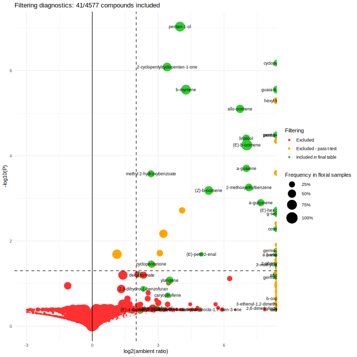
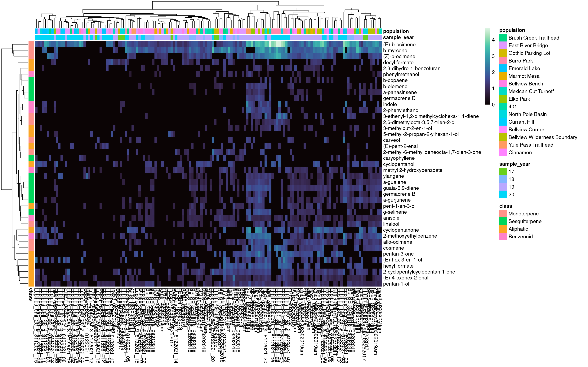
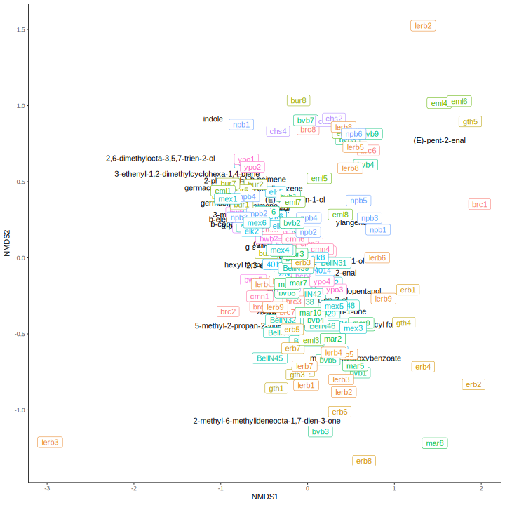
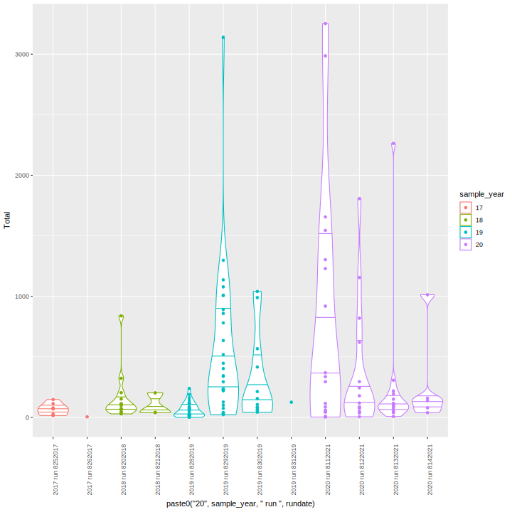
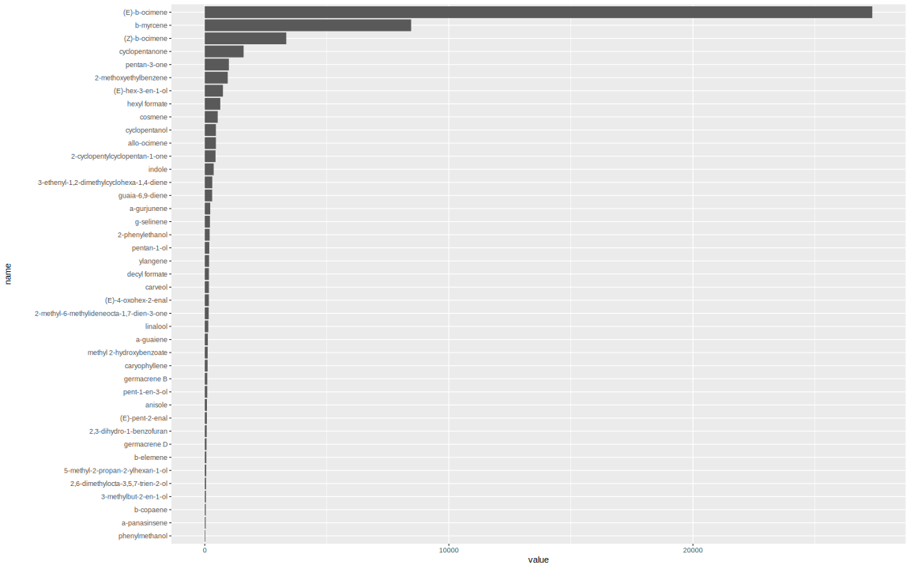
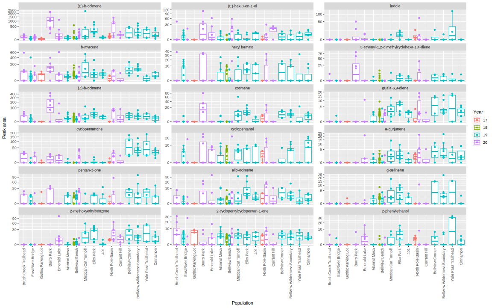
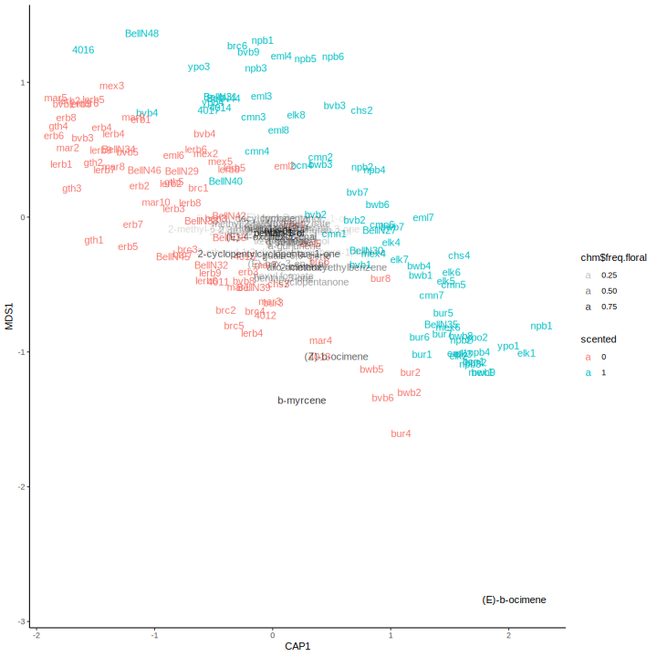
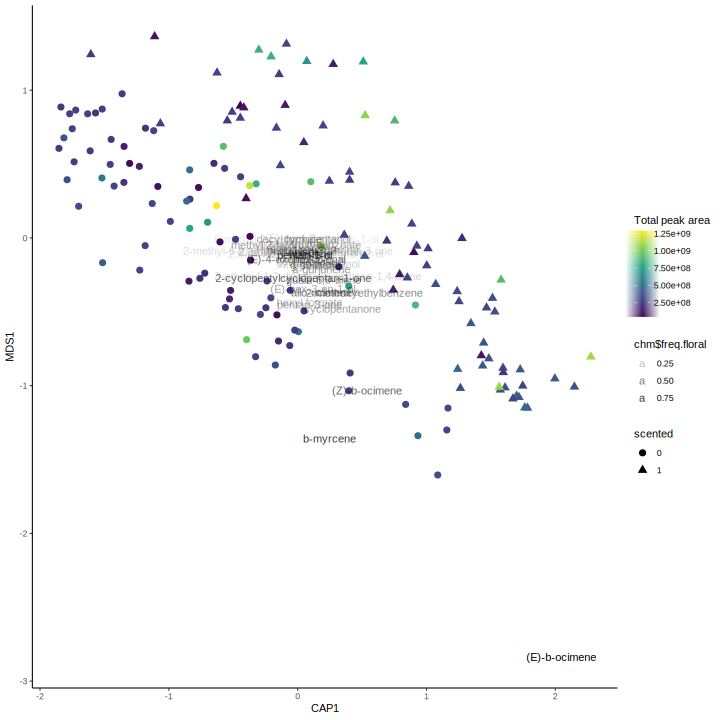
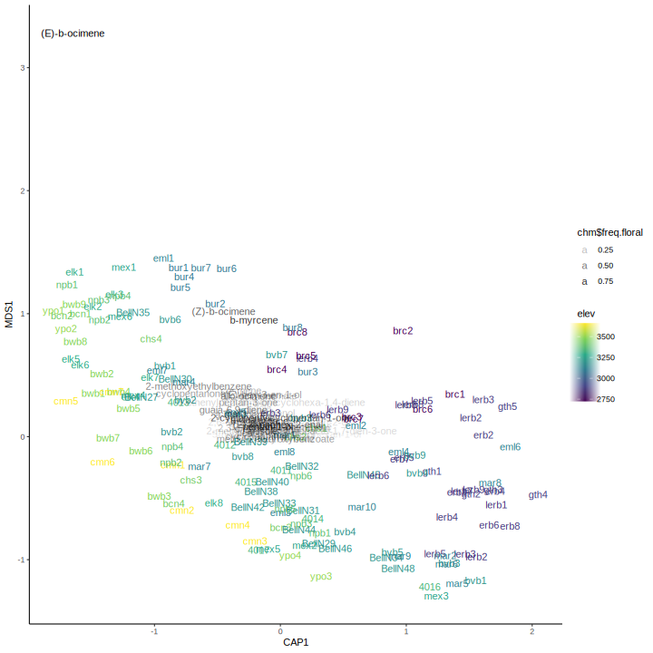

Lupine volatiles
Jacob Heiling, John Powers
2023-05-17
Read scent data
#reading in the Shimadzu search output is slow, skip it
#source("../read_shimadzu.R")
#setwd("../Maxfield/data")
#datafiles <- list.files(pattern="Lupinus"); datafiles %>% set_names() %>% map(read.shimadzu) %>% bind_rows(.id="batch")
# lup.data <- read.shimadzu("Lupinus_2017thru2021.txt")
# setwd(path)
# save(lup.data, file="data/lupinus_gc_2017thru2021.rda")
load("data/lupinus_gc_2017thru2021.rda")
# load short names and standard regressions
lupchems <- read_tsv("data/lupmeta2017thru2021 - lupchem.tsv") %>%
select(name, shortname, standard) %>%
mutate(class = fct_recode(standard, Aliphatic="Hexenol", Benzenoid="Methyl_salicylate", Benzenoid="Indole",
Sesquiterpene="Caryophyllene", Monoterpene="alpha_Pinene", Monoterpene="Linalool")) %>%
left_join(read_csv("data/regressions_181921_filtered_slopes.csv") %>% filter(year=="2019"))
class_pal <- set_names(c("#BC0060","#027B8C","#E56E00","#86D400"), levels(lupchems$class))
#shorten chemical names and merge compounds with multiple names
shortnames <- lupchems %>% select(name, shortname) %>% filter(shortname!="") %>% deframe()
#shortnames[shortnames %in% shortnames[duplicated(shortnames)]]
lup.data$Name <- recode(lup.data$Name, !!!shortnames)
sort(unique(lup.data$Filename)) [1] 4011_08282019.qgd 4012_08282019.qgd
[3] 4013_08282019.qgd 4014_08282019.qgd
[5] 4015_08282019.qgd 4016_08282019.qgd
[7] 4017_08292019am.qgd 401air1_08292019am.qgd
[9] 401air2_08292019am.qgd AirBellNAug16_08202018.qgd
[11] AirBellNAug18_08202018.qgd bbair1_08282019.qgd
[13] bcn1_08302019am.qgd bcn2_08302019am.qgd
[15] bcn3_08302019am.qgd bcn4_08302019am.qgd
[17] bcnair1_08302019am.qgd beetles_lerb_08292019am.qgd
[19] BellNBeetleAug16_08202018.qgd BellNBeetleAug18_08212018.qgd
[21] BellNFlr27Aug18_08202018.qgd BellNFlr29Aug18_08202018.qgd
[23] BellNFlr30Aug16_08202018.qgd BellNFlr31Aug16_08202018.qgd
[25] BellNFlr32Aug16_08202018.qgd BellNFlr33Aug16_08202018.qgd
[27] BellNFlr34Aug16_08202018.qgd BellNFlr35Aug16_08202018.qgd
[29] BellNFlr38Aug16_08202018.qgd BellNFlr39Aug16_08202018.qgd
[31] BellNFlr40Aug16_08202018.qgd BellNFlr42Aug16_08202018.qgd
[33] BellNFlr44Aug18_08202018.qgd BellNFlr45Aug18_08202018.qgd
[35] BellNFlr45Aug18retry_08212018.qgd BellNFlr46Aug18_08212018.qgd
[37] BellNFlr48Aug18_08212018.qgd BellNLeaf38Aug16_08202018.qgd
[39] BellNLeaf40Aug16_08202018.qgd Blank_08202018.qgd
[41] Blank_08212018.qgd Blank_08282019.qgd
[43] Blank_08292019am.qgd Blank_08292019pm.qgd
[45] Blank_08302019am.qgd Blank1_8112021_01.qgd
[47] Blank1_8122021_01.qgd BVB1_08282019.qgd
[49] BVB2_08282019.qgd BVB3_08282019.qgd
[51] BVB4_08282019.qgd bwb1_08292019pm.qgd
[53] bwb2_08292019pm.qgd bwb3_08292019pm.qgd
[55] bwb4_08292019pm.qgd bwb5_08292019pm.qgd
[57] bwb6_08292019pm.qgd bwb7_08292019pm.qgd
[59] bwb8_08292019pm.qgd bwb9_08292019pm.qgd
[61] bwbair1_08292019pm.qgd cm2forreal_08312019.qgd
[63] cmn1_08302019am.qgd cmn2reallycm3_08302019am.qgd
[65] cmn3reallycm4_08302019am.qgd cmn4reallycm5_08302019am.qgd
[67] cmn5reallycm6_08302019am.qgd cmn6reallycm7_08302019am.qgd
[69] cmnair1_08302019am.qgd elk1_08292019am.qgd
[71] elk2_08292019am.qgd elk3_08292019am.qgd
[73] elk4_08292019am.qgd elk5_08292019am.qgd
[75] elk6_08292019am.qgd elk7_08292019am.qgd
[77] elk8_08292019am.qgd elkair1_08292019am.qgd
[79] ERB1_08282019.qgd ERB2_08282019.qgd
[81] ERB3_08282019.qgd ERB4_08282019.qgd
[83] ERB5_08282019.qgd ERB6_08282019.qgd
[85] ERB7_08282019.qgd ERB8_08282019.qgd
[87] ERB9_08282019.qgd ERBAIR1_08282019.qgd
[89] ERBAIR2_08282019.qgd LERB1_08282019.qgd
[91] LERB2_08282019.qgd LERB3_08282019.qgd
[93] lerb4_08292019pm.qgd lerb5_08292019pm.qgd
[95] lerb6_08292019pm.qgd LERBAIR1_08282019.qgd
[97] lerbair2_08292019pm.qgd Lupine1Aug3L_08252017.qgd
[99] Lupine2Aug3L_08252017.qgd Lupine3Aug3_08252017.qgd
[101] Lupine4Aug3_08252017.qgd Lupine5Aug3L_08262017.qgd
[103] LupineR1Aug20_08252017.qgd LupineR2Aug20redo_08252017.qgd
[105] LupineR3Aug20_08252017.qgd LupineR4Aug20_08252017.qgd
[107] Lupinus_brc_20_1_8122021_11.qgd Lupinus_brc_20_2_8122021_20.qgd
[109] Lupinus_brc_20_2_8132021_20.qgd Lupinus_brc_20_3_8142021_05.qgd
[111] Lupinus_brc_20_4_8142021_06.qgd Lupinus_brc_20_5_8122021_17.qgd
[113] Lupinus_brc_20_6_8122021_15.qgd Lupinus_brc_20_7_8122021_13.qgd
[115] Lupinus_brc_20_8_8132021_17.qgd Lupinus_brc_20_air_1_8132021_19.qgd
[117] Lupinus_bur_20_1_8112021_04.qgd Lupinus_bur_20_2_8112021_06.qgd
[119] Lupinus_bur_20_3_8112021_10.qgd Lupinus_bur_20_4_8112021_08.qgd
[121] Lupinus_bur_20_5_8112021_07.qgd Lupinus_bur_20_6_8112021_02.qgd
[123] Lupinus_bur_20_7_8112021_05.qgd Lupinus_bur_20_8_8112021_09.qgd
[125] Lupinus_bur_20_air_1_8112021_03.qgd Lupinus_bvb_20_1_8122021_07.qgd
[127] Lupinus_bvb_20_2_8122021_08.qgd Lupinus_bvb_20_3_8122021_06.qgd
[129] Lupinus_bvb_20_4_8132021_11.qgd Lupinus_bvb_20_5_8132021_10.qgd
[131] Lupinus_bvb_20_6_8122021_09.qgd Lupinus_bvb_20_7_8132021_14.qgd
[133] Lupinus_bvb_20_8_8132021_13.qgd Lupinus_bvb_20_9_8132021_12.qgd
[135] Lupinus_bvb_20_air_1_8122021_10.qgd Lupinus_chs_20_1_8132021_08.qgd
[137] Lupinus_chs_20_2_8132021_05.qgd Lupinus_chs_20_3_8132021_09.qgd
[139] Lupinus_chs_20_4_8132021_07.qgd Lupinus_chs_20_air_1_8132021_06.qgd
[141] Lupinus_eml_20_1_8132021_03.qgd Lupinus_eml_20_2_8132021_04.qgd
[143] Lupinus_eml_20_3_8112021_11.qgd Lupinus_eml_20_4_8112021_14.qgd
[145] Lupinus_eml_20_5_8112021_13.qgd Lupinus_eml_20_6_8112021_16.qgd
[147] Lupinus_eml_20_7_8112021_17.qgd Lupinus_eml_20_8_8112021_15.qgd
[149] Lupinus_eml_20_air_1_8132021_01.qgd Lupinus_eml_20_air_2_8112021_12.qgd
[151] Lupinus_lerb_20_2_8132021_18.qgd Lupinus_lerb_20_3_8122021_12.qgd
[153] Lupinus_lerb_20_4_8142021_02.qgd Lupinus_lerb_20_5_8142021_04.qgd
[155] Lupinus_lerb_20_6_8122021_16.qgd Lupinus_lerb_20_7_8122021_14.qgd
[157] Lupinus_lerb_20_8_8122021_18.qgd Lupinus_lerb_20_8_8132021_16.qgd
[159] Lupinus_lerb_20_9_8132021_15.qgd Lupinus_lerb_20_air_1_8122021_19.qgd
[161] Lupinus_npb_20_1_8122021_03.qgd Lupinus_npb_20_1_8132021_02.qgd
[163] Lupinus_npb_20_1_8142021_03.qgd Lupinus_npb_20_2_8122021_05.qgd
[165] Lupinus_npb_20_3_8122021_02.qgd Lupinus_npb_20_4_8112021_20.qgd
[167] Lupinus_npb_20_5_8112021_18.qgd Lupinus_npb_20_6_8112021_19.qgd
[169] Lupinus_npb_20_air_1_8122021_04.qgd mar1_08282019.qgd
[171] mar10_08282019.qgd mar2_08282019.qgd
[173] mar3_08282019.qgd mar4_08282019.qgd
[175] mar5_08282019.qgd mar6_08282019.qgd
[177] mar7_08282019.qgd mar8_08282019.qgd
[179] mar9_08282019.qgd marair1_08282019.qgd
[181] marair2_08282019.qgd mex1_08292019am.qgd
[183] mex2_08292019am.qgd mex3_08292019am.qgd
[185] mex4_08292019am.qgd mex5_08292019am.qgd
[187] mex6_08292019pm.qgd mexair1_08292019pm.qgd
[189] thrips_elk_08292019am.qgd ypo1_08292019pm.qgd
[191] ypo2_08292019pm.qgd ypo3_08302019am.qgd
[193] ypo4_08302019am.qgd ypoair1_08292019pm.qgd
194 Levels: 4011_08282019.qgd 4012_08282019.qgd ... ypoair1_08292019pm.qgdlup.all <- lup.data %>%
#filter(str_detect(Filename, "Lupinus|Blank")) %>%
dcast(Filename~Name, sum, value.var="Area")
rownames(lup.all) <- lup.all[,1]
lup.all[,1] <- NULL
lup.cut <- lup.all[,colSums(lup.all)>1e8]#arbitrary cutoff 5e7k <- 7
set.seed(1)
km <- kmeans(decostand(lup.cut, method="log"), k, nstart=3)
lup.km <- tibble(FileName=rownames(lup.all)) %>%
mutate(rowSum = rowSums(lup.all),
Type = str_detect(FileName, "Blank") %>% if_else("blank","sample") %>% factor,
#str_extract(FileName, "Blank|Lupinus") %>% fct_recode(blank="Blank",sample="Lupinus")
nameBlank = Type=="blank",
runYear = str_extract(FileName, "2017|2018|2019|2020|2021") %>%factor,#replace_na("2018") %>%
Cluster = km$cluster) %>% # Figure out which k-means clusters are the blanks
mutate(kBlank = Cluster %in% (count(., nameBlank, Cluster) %>% filter(nameBlank, n>2) %>% pull(Cluster)),
Mixup = nameBlank != kBlank)
lup.km %>% count(kBlank, nameBlank)# A tibble: 3 × 3
kBlank nameBlank n
<lgl> <lgl> <int>
1 FALSE FALSE 144
2 TRUE FALSE 42
3 TRUE TRUE 8#Blanks are in two clusters near other samples, so kmeans not working very well to distinguish them (unless high n)Read metadata
# Moved this section from markes_sequence.R, code above that section outputs this Rdata:
load("data/markes_sequence.rda")#../Inventory/
lupinus <- sequ.summary$FileName %in% lup.km$FileName # #str_detect(sequ.summary$FullName, "Lupinus|lupinus|Lupine")
lupinus.batchids <- sequ.summary %>% filter(lupinus) %>% select(id) %>% unique() %>% na.omit()
lupgc <- sequ.summary %>%
filter(id %in% lupinus.batchids$id | lupinus) %>% #get entire batch if it had a sample that matches
left_join(lup.km %>% select(FileName, rowSum, nameBlank, Mixup, kBlank, Cluster), by="FileName") %>%
write_csv("output/lupinus_all_2017thru2021.csv")
pops <- read_tsv("data/lupmeta2017thru2021 - pops.tsv") %>% mutate(population=factor(population, levels=unique(population)))
popnames <- pops %>% select(pop,population) %>% deframe()
# Get metadata from filenames in "RMBL GC-MS Data Inventory"
lupmeta <- read_tsv("data/RMBL GC-MS Data Inventory - maxfield_all210827annot.tsv", na="NA") %>%
filter(user=="J Heiling : Lupinus") %>%
distinct(FileName, .keep_all = TRUE) %>%
mutate(sample = na_if(sample,"") %>% coalesce(FileName) %>% str_remove(".qgd")) %>%
select(index, FileName, batch, sample) %>%
mutate(type = ifelse(str_detect(sample,"air"), "ambient", "floral"),
sample_grid = str_remove(sample, "air_"), scented=NA_character_) %>%
separate(sample_grid, into=c("species","pop","sample_year","plant","rundate","GCn"), remove=F) %>%
full_join(lupgc %>% distinct(FileName, .keep_all = T), by="FileName") %>%
# lupmeta %>% select(index, FileName, sample, rowSum, Cluster, type, pop, sample_year, plant, rundate, GCn) %>%
# drop_na(Cluster) %>%
# separate(FileName, into=paste0("fn",1:8), remove=F, fill="right") %>%
# write_csv("output/lupmeta.csv", na="") #fill in metadata for old samples (2017-2019)
rows_update(read_tsv("data/lupmeta2017thru2021 - lupmeta.tsv", col_types="cccccccccccccccccccc") %>%
#filter(is.na(index)) %>% #just dropped this-restricts to 2017-2019
select(FileName, type, pop, sample_year, plant, scented, rundate), by="FileName") %>%
mutate(index = coalesce(index, 10000 + 1:nrow(.)),
sample = coalesce(sample, FileName) %>% str_remove(".qgd")) %>% #these filled samples were excluded above with na_if(sample,"")
drop_na(nameBlank) %>% #drops rows in same batchids but not integrated (other people's samples)
filter(!nameBlank) %>% #!kBlank
filter(type %in% c("ambient","floral")) %>% #exclude leaf controls and insects
left_join(pops) %>% mutate(pop = factor(pop, levels=pops$pop))
with(lupmeta, table(population, sample_year)) sample_year
population 17 18 19 20
Brush Creek Trailhead 0 0 0 9
East River Bridge 0 0 19 10
Gothic Parking Lot 5 0 0 0
Burro Park 0 0 0 9
Emerald Lake 0 0 0 11
Marmot Mesa 0 0 12 0
Bellview Bench 0 18 5 10
Mexican Cut Turnoff 0 0 7 0
Elko Park 0 0 9 0
401 0 0 9 0
North Pole Basin 4 0 0 9
Currant Hill 0 0 0 5
Bellview Corner 0 0 5 0
Bellview Wilderness Boundary 0 0 10 0
Yule Pass Trailhead 0 0 5 0
Cinnamon 0 0 8 0lupmeta %>% filter(type=="floral") %>% count(population, sample_year, scented) %>% pivot_wider(names_from=scented,values_from=n)# A tibble: 20 × 4
population sample_year `0` `1`
<fct> <chr> <int> <int>
1 Brush Creek Trailhead 20 7 1
2 East River Bridge 19 15 NA
3 East River Bridge 20 9 NA
4 Gothic Parking Lot 17 5 NA
5 Burro Park 20 4 4
6 Emerald Lake 20 3 5
7 Marmot Mesa 19 10 NA
8 Bellview Bench 18 9 7
9 Bellview Bench 19 2 2
10 Bellview Bench 20 4 5
11 Mexican Cut Turnoff 19 3 3
12 Elko Park 19 NA 8
13 401 19 4 3
14 North Pole Basin 17 NA 4
15 North Pole Basin 20 NA 8
16 Currant Hill 20 2 2
17 Bellview Corner 19 1 3
18 Bellview Wilderness Boundary 19 2 7
19 Yule Pass Trailhead 19 NA 4
20 Cinnamon 19 NA 7lup <- lup.all[lupmeta$FileName,]
rownames(lup) <- rownames(lupmeta) <- lupmeta$index
save(lup, lupmeta, file="output/lupinus_volatiles_2017thru2021.rda")Compare all samples and blanks
lup.nmds <- metaMDS(sqrt(lup.cut), dist="bray", autotransform = FALSE, trace=F)
lup.nmds.points <- fortify(lup.nmds) %>% as_tibble() %>%
filter(Score=="sites") %>% left_join(lup.km, by=c("Label"="FileName"))
nmds.plot <- ggplot(lup.nmds.points, aes(x=NMDS1, y=NMDS2, shape=Type)) + theme_classic()
nmds.plot + geom_point(aes(color=log(rowSum)), size=2) + scale_color_viridis_c()
nmds.plot + geom_point(aes(color=runYear), size=2)nmds.plot + geom_point(aes(color=factor(Cluster)), size=2)nmds.plot + geom_point(aes(color=nameBlank), size=2)lup.cap <- capscale(lup.cut ~ nameBlank, distance="bray", metaMDSdist = F, data=lup.km)
anova(lup.cap)Permutation test for capscale under reduced model
Permutation: free
Number of permutations: 999
Model: capscale(formula = lup.cut ~ nameBlank, data = lup.km, distance = "bray", metaMDSdist = F)
Df SumOfSqs F Pr(>F)
Model 1 0.580 1.8799 0.056 .
Residual 192 59.201
---
Signif. codes: 0 '***' 0.001 '**' 0.01 '*' 0.05 '.' 0.1 ' ' 1lup.cap.points <- fortify(lup.cap) %>% as_tibble() %>%
filter(Score=="sites") %>% left_join(lup.km, by=c("Label"="FileName"))
ggplot(lup.cap.points, aes(x=CAP1, y=MDS1, alpha=nameBlank)) + geom_point() +
scale_alpha_manual(values=c(0.2,1))cap.chems <- fortify(lup.cap) %>% as_tibble() %>% filter(Score=="species") %>% arrange(desc(CAP1))Compare flowers and ambient controls
with(lupmeta, table(type, sample_year)) sample_year
type 17 18 19 20
ambient 0 2 15 9
floral 9 16 74 54lup.nmds.noblanks <- metaMDS(lup[,colSums(lup)>1e8], distance="bray", autotransform=F, trace=F)
lup.nmds.points <- as_tibble(fortify(lup.nmds.noblanks))
lup.nmds.points %>% filter(Score=="sites")%>% bind_cols(lupmeta) %>%
ggplot(aes(x=NMDS1, y=NMDS2)) +
geom_label(aes(label=sample, color=type)) +
geom_text(data= lup.nmds.points %>% filter(Score=="species"), aes(label=Label))lup.cap.noblanks <- capscale(lup[,colSums(lup)>1e8] ~ type, distance="bray", metaMDSdist = F, data=lupmeta)
anova(lup.cap.noblanks, by="term")Permutation test for capscale under reduced model
Terms added sequentially (first to last)
Permutation: free
Number of permutations: 999
Model: capscale(formula = lup[, colSums(lup) > 1e+08] ~ type, data = lupmeta, distance = "bray", metaMDSdist = F)
Df SumOfSqs F Pr(>F)
type 1 0.405 1.3329 0.217
Residual 177 53.847 lup.cap.points <- as_tibble(fortify(lup.cap.noblanks))
lup.cap.points %>% filter(Score=="sites")%>% bind_cols(lupmeta) %>%
ggplot(aes(x=CAP1, y=MDS1)) +
geom_label(aes(label=sample, color=paste(type, sample_year))) +
geom_text(data= lup.cap.points %>% filter(Score=="species"), aes(label=Label))Filtering
lup.data.cut <- lup.data[lup.data$Filename %in% lupmeta$FileName,]
lup.data.cut$Filename <- lupmeta$sample[match(lup.data.cut$Filename, lupmeta$FileName)]
lup.data.cut <- lup.data.cut[lup.data.cut$Name != "", ]
lup.data.cut$Name <- droplevels(lup.data.cut$Name)
longdata <- load_longdata(lup.data.cut, sample="Filename", RT="Ret.Time", name="Name", area="Area", match = "SI", maxmatch=100)
metadata <- load_metadata(lupmeta, sample="sample", type="type")
metadata$type <- factor(metadata$type)
vol.all <- make_sampletable(longdata, metadata)
chems <- make_chemtable(longdata, metadata)
### Flower filtering
chemsf <- chems %>%
filter_RT(2, 17) %>%
filter_match(0.8) %>%
filter_freq(0.1, group = FALSE) %>%
filter_contaminant(cont.list = c("Decanoic acid, silver(1+) salt",
"1,1,1,3,5,7,9,11,11,11-Decamethyl-5-(trimethylsiloxy)hexasiloxane",
"Oxirane, decyl-","Tetradecane, 4-methyl-", "Octadecane, 1-chloro-",
"Cyclobutane, 1,2-bis(1-methylethenyl)-, trans-",
"Hexyl chloroformate", "Trifluoroacetic acid,n-tridecyl ester",
"Hexadecane, 2,6,11,15-tetramethyl-","Decane, 2,3,5,8-tetramethyl-",
"2-Pentanol, 3-chloro-4-methyl-, (R*,R*)-(.+/-.)-")) %>%
filter_area(min_maximum = 1e6) %>%
filter_ambient_ratio(vol.all, metadata, ratio = 4) %>%
filter_ambient_ttest(vol.all, metadata, alpha = 0.05, adjust = "fdr") %>%
combine_filters()
chemsf$filter_final <- with(chemsf, filter_RT == "OK" & filter_match=="OK" & filter_freq.floral == "OK" &
filter_contaminant == "OK" & filter_area == "OK" & filter_ambient_ratio == "OK")
plot_filters(chemsf, option="prop")plot_filters(chemsf, option="rarity")plot_filters(chemsf, option="ambient")plot_filters(chemsf, option="volcano")
#Pruning
vol <- prune_sampletable(vol.all, chemsf, metadata)
meta <- metadata[metadata$type == "floral",][rowSums(vol)>0,]
vol <- vol[rowSums(vol)>0,]
chm <- chemsf[match(colnames(vol), chemsf$name),]
#Convert peak areas to nanograms
lupchems2 <- lupchems[match(colnames(vol), lupchems$shortname),]
vol <- sweep(vol, 2, lupchems2$area_per_ng, FUN = '/')
vol <- vol / (40/60 + 20/60) # divide by equilibration + pumping time in hours (40+20 min)
meta$Total <- rowSums(vol)
save(vol, meta, chm, file="output/lupinus_filtered_2017thru2021.rda")
write_csv(vol, "output/lupinus_vol.csv")
write_csv(meta, "output/lupinus_meta.csv")
write_csv(chm, "output/lupinus_chm.csv")Heatmap
pheatmap(t(vol^(1/5)), color = mako(512),
annotation_col = select(meta, sample_year, population, sample) %>%
column_to_rownames("sample") %>% mutate(sample_year=factor(sample_year)),
annotation_row = select(lupchems, class, shortname) %>% distinct(shortname, .keep_all=TRUE) %>% column_to_rownames("shortname"))
NMDS of filtered volatiles
lup.nmds <- metaMDS(sqrt(vol), dist="bray", autotransform = FALSE, trace=F)
lup.nmds.points <- fortify(lup.nmds) %>% as_tibble()
lup.nmds.samples <- lup.nmds.points %>% filter(Score=="sites") %>% bind_cols(meta)
lup.nmds.chems <- lup.nmds.points %>% filter(Score=="species")
nmds.plot <- ggplot(lup.nmds.samples, aes(x=NMDS1, y=NMDS2)) +
geom_text(data=lup.nmds.chems, aes(label=Label)) + theme_classic() #alpha=chm$freq.floral
nmds.plot + geom_label(aes(label=paste0(pop, plant), color=pop)) + guides(color="none")
nmds.plot + geom_point(aes(color=sqrt(rowSums(vol)), shape=sample_year), size=2) + scale_color_viridis_c("Sqrt total peak area", option="magma") nmds.plot + geom_point(aes(color=sample_year), size=2)Total volatiles by run date
ggplot(meta, aes(x=paste0("20", sample_year, " run ", rundate), color=sample_year, y=Total)) +
geom_violin(scale="width", draw_quantiles=(1:3)/4) + geom_point() +
theme(axis.text.x = element_text(angle=90))
CAP by GC run year
Only look at 2019 vs. 2020 here
twoyears <- meta$sample_year %in% c("19","20")
lup.cap <- capscale(sqrt(vol[twoyears,]) ~ sample_year, dist="bray", data=meta[twoyears,])
#View(lup.cap$CCA$v)
lup.cap.points <- fortify(lup.cap) %>% as_tibble()
lup.cap.samples <- lup.cap.points %>% filter(Score=="sites") %>% bind_cols(meta[twoyears,])
lup.cap.chems <- lup.cap.points %>% filter(Score=="species")
ggplot(lup.cap.samples, aes(x=CAP1, y=MDS1)) +
geom_point(aes(color=sample_year)) +
geom_text(data=lup.cap.chems, aes(label=Label, alpha=chm$freq.floral)) + theme_classic()PERMANOVA of populations
adonis2(sqrt(vol) ~ sample_year + population, data=meta)Permutation test for adonis under reduced model
Terms added sequentially (first to last)
Permutation: free
Number of permutations: 999
adonis2(formula = sqrt(vol) ~ sample_year + population, data = meta)
Df SumOfSqs R2 F Pr(>F)
sample_year 3 4.069 0.10812 6.9435 0.001 ***
population 15 7.782 0.20677 2.6559 0.001 ***
Residual 132 25.784 0.68511
Total 150 37.635 1.00000
---
Signif. codes: 0 '***' 0.001 '**' 0.01 '*' 0.05 '.' 0.1 ' ' 1CAP of populations
lup.cap <- capscale(sqrt(vol) ~ sample_year + population, dist="bray", data=meta)
lup.capCall: capscale(formula = sqrt(vol) ~ sample_year + population, data =
meta, distance = "bray")
Inertia Proportion Rank
Total 37.6354 1.0000
Constrained 12.6527 0.3362 18
Unconstrained 32.8545 0.8730 63
Imaginary -7.8718 -0.2092 87
Inertia is squared Bray distance
Species scores projected from 'sqrt' 'vol'
Eigenvalues for constrained axes:
CAP1 CAP2 CAP3 CAP4 CAP5 CAP6 CAP7 CAP8 CAP9 CAP10 CAP11 CAP12 CAP13
4.381 2.693 1.272 0.823 0.744 0.662 0.431 0.288 0.245 0.229 0.198 0.148 0.134
CAP14 CAP15 CAP16 CAP17 CAP18
0.126 0.104 0.091 0.069 0.015
Eigenvalues for unconstrained axes:
MDS1 MDS2 MDS3 MDS4 MDS5 MDS6 MDS7 MDS8
4.842 3.703 2.626 2.287 1.836 1.586 1.411 1.184
(Showing 8 of 63 unconstrained eigenvalues)anova(lup.cap, by="margin")Permutation test for capscale under reduced model
Marginal effects of terms
Permutation: free
Number of permutations: 999
Model: capscale(formula = sqrt(vol) ~ sample_year + population, data = meta, distance = "bray")
Df SumOfSqs F Pr(>F)
sample_year 3 2.473 3.3124 0.001 ***
population 15 8.499 2.2763 0.001 ***
Residual 132 32.855
---
Signif. codes: 0 '***' 0.001 '**' 0.01 '*' 0.05 '.' 0.1 ' ' 1lup.cap.points <- fortify(lup.cap) %>% as_tibble()
lup.cap.samples <- lup.cap.points %>% filter(Score=="sites") %>% bind_cols(meta)
lup.cap.chems <- lup.cap.points %>% filter(Score=="species")
ggplot(lup.cap.samples, aes(x=CAP1, y=CAP2)) +
geom_text(data=lup.cap.chems, aes(label=Label, alpha=chm$freq.floral)) +
geom_label(aes(label=paste0(pop, plant), color=sample_year)) + theme_classic()ggplot(lup.cap.samples, aes(x=CAP1, y=CAP2)) +
geom_point(aes(color=rowSum)) + scale_color_viridis_c("Total peak area") + theme_classic()Boxplot of populations
Compounds are in order of mean peak area, arranged in columns.
topamounts <- sort(colSums(vol), decreasing = T)
topchems <- head(names(topamounts), 18)
ggplot(enframe(topamounts) %>% mutate(name=fct_reorder(name, value)), aes(y=name, x=value)) + geom_col()
vol %>% select(topchems) %>% rownames_to_column("sample") %>%
pivot_longer(topchems) %>% mutate(name=fct_relevel(name, topchems)) %>%
left_join(meta) %>%
ggplot(aes(x=population, y=value, color=sample_year)) + facet_wrap(vars(name), ncol=3, scales="free_y", dir="v")+
scale_y_sqrt() + scale_x_discrete(guide=guide_axis(angle=90))+
geom_boxplot(position=position_dodge(width=0.9), outlier.shape = NA) +
geom_point(position=position_dodge(width=0.9)) +
labs(x="Population", y="Peak area", color="Year")
CAP of un/scented
lup.cap <- capscale(sqrt(vol) ~ scented, dist="bray", data=meta)
lup.capCall: capscale(formula = sqrt(vol) ~ scented, data = meta, distance =
"bray")
Inertia Proportion Rank
Total 37.63542 1.00000
Constrained 2.69343 0.07157 1
Unconstrained 42.81376 1.13759 63
Imaginary -7.87177 -0.20916 87
Inertia is squared Bray distance
Species scores projected from 'sqrt' 'vol'
Eigenvalues for constrained axes:
CAP1
2.6934
Eigenvalues for unconstrained axes:
MDS1 MDS2 MDS3 MDS4 MDS5 MDS6 MDS7 MDS8
6.357 5.435 3.249 2.698 2.155 1.955 1.818 1.759
(Showing 8 of 63 unconstrained eigenvalues)anova(lup.cap, by="margin")Permutation test for capscale under reduced model
Marginal effects of terms
Permutation: free
Number of permutations: 999
Model: capscale(formula = sqrt(vol) ~ scented, data = meta, distance = "bray")
Df SumOfSqs F Pr(>F)
scented 1 2.693 9.3736 0.001 ***
Residual 149 42.814
---
Signif. codes: 0 '***' 0.001 '**' 0.01 '*' 0.05 '.' 0.1 ' ' 1lup.cap.points <- fortify(lup.cap) %>% as_tibble()
lup.cap.samples <- lup.cap.points %>% filter(Score=="sites") %>% bind_cols(meta)
lup.cap.chems <- lup.cap.points %>% filter(Score=="species")
ggplot(lup.cap.samples, aes(x=CAP1, y=MDS1)) +
geom_text(aes(label=paste0(pop, plant), color=scented)) +
geom_text(data=lup.cap.chems, aes(label=Label, alpha=chm$freq.floral)) + theme_classic()
ggplot(lup.cap.samples, aes(x=CAP1, y=MDS1)) +
geom_point(aes(color=rowSum, shape=scented), size=3) +
geom_text(data=lup.cap.chems, aes(label=Label, alpha=chm$freq.floral))+ scale_color_viridis_c("Total peak area") + theme_classic()
ggplot(cbind(meta, vol), aes(x=pop, y=`(E)-b-ocimene`, color=scented)) +
geom_boxplot(position=position_dodge(width=0.9))+
geom_point(position=position_dodge(width=0.9), size=3) + scale_y_sqrt() + theme_minimal()ggplot(cbind(meta, vol), aes(x=pop, y=rowSums(vol), color=scented)) + geom_boxplot(position=position_dodge(width=0.9))+
geom_point(position=position_dodge(width=0.9), size=3)+ scale_y_sqrt("Total emissions (ng/hr)") + theme_minimal() CAP of elevation
lup.cap <- capscale(sqrt(vol) ~ elev, dist="bray", data=meta)
lup.capCall: capscale(formula = sqrt(vol) ~ elev, data = meta, distance =
"bray")
Inertia Proportion Rank
Total 37.63542 1.00000
Constrained 2.40241 0.06383 1
Unconstrained 43.10478 1.14532 63
Imaginary -7.87177 -0.20916 87
Inertia is squared Bray distance
Species scores projected from 'sqrt' 'vol'
Eigenvalues for constrained axes:
CAP1
2.4024
Eigenvalues for unconstrained axes:
MDS1 MDS2 MDS3 MDS4 MDS5 MDS6 MDS7 MDS8
7.016 5.366 3.132 2.704 2.182 1.878 1.818 1.749
(Showing 8 of 63 unconstrained eigenvalues)anova(lup.cap, by="margin")Permutation test for capscale under reduced model
Marginal effects of terms
Permutation: free
Number of permutations: 999
Model: capscale(formula = sqrt(vol) ~ elev, data = meta, distance = "bray")
Df SumOfSqs F Pr(>F)
elev 1 2.402 8.3044 0.001 ***
Residual 149 43.105
---
Signif. codes: 0 '***' 0.001 '**' 0.01 '*' 0.05 '.' 0.1 ' ' 1lup.cap.points <- fortify(lup.cap) %>% as_tibble()
lup.cap.samples <- lup.cap.points %>% filter(Score=="sites") %>% bind_cols(meta)
lup.cap.chems <- lup.cap.points %>% filter(Score=="species")
ggplot(lup.cap.samples, aes(x=CAP1, y=MDS1)) +
geom_text(aes(label=paste0(pop, plant), color=elev)) + scale_color_viridis_c()+
geom_text(data=lup.cap.chems, aes(label=Label, alpha=chm$freq.floral)) + theme_classic()
ggplot(cbind(meta, vol), aes(x=elev, y=`(E)-b-ocimene`, color=sample_year, shape=scented, linetype=scented)) + geom_point() +
stat_summary(fun=mean, geom="line")+ stat_summary(fun=mean, geom="point", size=4)+
scale_shape_manual(values=c(4,15), na.value=1) + scale_linetype_manual(values=c(2,1), na.value=1) + scale_y_sqrt() + theme_minimal()+
geom_text(data=distinct(pops,population,.keep_all = T), aes(x=elev,y=0,label=pop), nudge_y = -2, angle=90, inherit.aes = F)
ggplot(cbind(meta, vol), aes(x=elev, y=Total, color=sample_year, shape=scented, linetype=scented)) + geom_point() +
stat_summary(fun=mean, geom="line")+ stat_summary(fun=mean, geom="point", size=4)+
scale_shape_manual(values=c(4,15), na.value=1) + scale_linetype_manual(values=c(2,1), na.value=1) + scale_y_sqrt("Total emissions (ng/hr)") + theme_minimal()+
geom_text(data=distinct(pops,population,.keep_all = T), aes(x=elev,y=0,label=pop), nudge_y = -2, angle=90, inherit.aes = F)